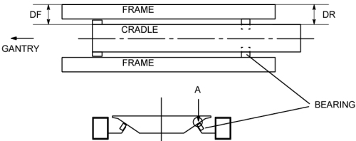

Operating Documentation
Direction 5181166-800, Rev# 7
BrightSpeed Select Service Methods Adv
Operating Documentation |
| Required Persons | Preliminary Reqs | Procedure | Finalization |
|---|---|---|---|
| 1 |
| Last Revised: | 16 March 2007 |
"Remove power from Table by turning off “120VAC”, “Axial Drive” and “HVDC” switches on the service switch panel."
Remove the Table right and left side covers.
Move the cradle to the Out Limit position by hand.
Adjust the position of the bearing to meet the following conditions (see illustration Illustration 1).
The Table frame and the cradle are parallel; adjust so that the difference between gap DF (measured on the In side) and gap DR (measured on the Out side) becomes 1.5 mm or less.
A gap of 0.1 mm or more (A) exists between the cradle and the bearing (at least one of the right and left bearings) ; however, the total of the gaps on the right and left sides should be 2.5 mm or less.
Illustration 1: Gap between Frame and Cradle

Restore the Table to original configuration.
No finalization required.